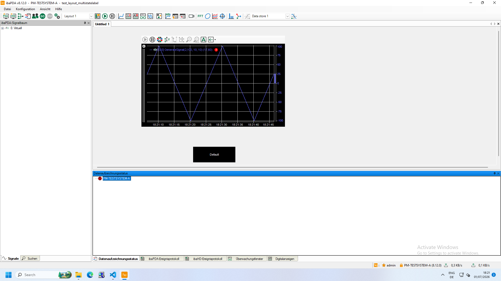

Status
success
Success
True
Iterations
1
Total time
52.29 s
Started
2026-07-01 18:21:59
Finished
2026-07-01 18:22:51
Report file
report_20260701_182159.html
Input tokens
6517 tokens
Output tokens
2258 tokens
Model time
51.49 s
Task
Perform only this ibaPDA cleanup task on the existing foreground ibaPDA window: 1. Do not open or launch ibaPDA. An existing instance has already been restored and focused. 2. Inspect Data Recording state. 3. If Data Recording is active, indicated by a 'Data Store' entry with a green circular indicator and/or gray GO with red STOP, click the red Data Recording STOP button and confirm only an unambiguous stop dialog. 4. If Data Recording is already stopped, do not click GO or STOP. 5. Terminate with status success as soon as Data Recording is visibly stopped. The runner, not you, will close the existing ibaPDA window afterward. Safety restrictions: - Never click GO in this cleanup task. - Never launch a new ibaPDA instance. - Never close the ibaPDA window yourself and never click a title-bar close button. - Do not modify configuration, files, signals, views, or measurement settings. - If recording is active but STOP or an expected stop confirmation cannot be identified clearly, terminate with status failure.
Metadata
{
"model": "qwen3.5:397b-cloud",
"model_options": {
"temperature": 0.1,
"num_ctx": 32768,
"num_predict": 512
},
"max_iterations": 10,
"screenshot_dir": "C:\\Users\\PDA\\Desktop\\Prototyp\\Computer-Use-Agent\\ui_tests\\test_cases\\Reports_Masterarbeit\\tf_06\\tf_06_20260701_181705\\post_cleanup\\screenshots",
"allowed_actions": [
"checkpoint",
"left_click",
"terminate",
"wait"
],
"verify_mouse_targets": true,
"abort_on_mouse_verification_failure": false
}
Result
{
"success": true,
"status": "success",
"message": "Task completed in 1 iterations",
"iterations": 1,
"elapsed_time": 52.288841247558594,
"report_path": "C:\\Users\\PDA\\Desktop\\Prototyp\\Computer-Use-Agent\\ui_tests\\test_cases\\Reports_Masterarbeit\\tf_06\\tf_06_20260701_181705\\post_cleanup\\report_20260701_182159.html"
}
Iteration 1
Screenshot
C:\Users\PDA\Desktop\Prototyp\Computer-Use-Agent\ui_tests\test_cases\Reports_Masterarbeit\tf_06\tf_06_20260701_181705\post_cleanup\screenshots\screenshot_001_20260701_182159.png

Reasoning / Response Text
Looking at the current state of the ibaPDA Client window, I need to inspect the Data Recording state to determine what action to take. From the screenshot, I can see: 1. The ibaPDA Client is already open and focused 2. In the toolbar, I can see the GO/STOP button pair 3. Looking at the "Datenaufzeichnungsstatus" (Data Recording Status) pane at the bottom, I can see "PM-TESTSYSTEM-A" with what appears to be a red indicator Let me analyze the Data Recording state: - The GO button appears to be green (filled) - The STOP button appears to be gray - In the Datenaufzeichnungsstatus pane, there's only the system name "PM-TESTSYSTEM-A" visible with a red indicator, but no "Data Store" entry with a green indicator Based on the task instructions: - If Data Recording is active (indicated by 'Data Store' entry with green circular indicator and/or gray GO with red STOP), I should click the red STOP button - If Data Recording is already stopped, I should not click GO or STOP From what I can see: - GO appears green (not gray) - STOP appears gray (not red) - There's no "Data Store" entry visible in the status pane This indicates that Data Recording is currently STOPPED. According to the task instructions, if Data Recording is already stopped, I should not click GO or STOP, and I should terminate with status success. However, let me look more carefully at the toolbar to make sure I'm correctly identifying the button states. The GO/STOP pair should be between the two-person icon and the gear icons. Looking at the toolbar more carefully, I can see what appears to be a green circular button with "GO" text and a gray circular button with "STOP" text. This confirms that Data Recording is in the stopped state. Since Data Recording is already stopped, according to the task instructions, I should terminate with status success. The runner will close the ibaPDA window afterward. Wait, let me reconsider. I should verify my observation more carefully. Let me look at the Datenaufzeichnungsstatus pane again. It shows "PM-TESTSYSTEM-A" with what looks like a red indicator. According to the instructions, when Data Recording is stopped, only the system/computer name is present with no 'Data Store' entry. This matches what I see. So my conclusion is: Data Recording is already stopped. I should terminate with status success without clicking any buttons. Actually, I need to be more careful here. Let me re-examine the image to make absolutely sure about the button states. The GO button should be: - Green filled circle with white 'GO' text when stopped - Gray when running The STOP button should be: - Gray when stopped - Red filled circle with white 'STOP' text when running From what I can see in the toolbar, the GO button appears to have a green background and the STOP button appears gray. This indicates the stopped state. Given this analysis, Data Recording is already stopped, so I should terminate with status success. But wait - I should double-check by looking more carefully at the actual button colors in the toolbar. Let me examine the area where GO and STOP buttons are located more precisely. Looking at the toolbar area, I can identify: - A green two-person/user icon on the left - What appears to be a green circular GO button - What appears to be a gray circular STOP button - Gear icons to the right This confirms the stopped state. Since Data Recording is already stopped, I should not click any buttons and should terminate with success. However, I'm being asked what I should do FIRST. The first step is to inspect the Data Recording state, which I've done. Based on my inspection, Data Recording appears to be stopped. But to be absolutely certain, I should verify this by checking if there's any ambiguity. Looking at the Datenaufzeichnungsstatus pane at the bottom, I see "PM-TESTSYSTEM-A" with a red stop-sign-like indicator. There's no "Data Store" entry visible, which according to the instructions indicates the stopped state. My conclusion: Data Recording is stopped. According to the task, if Data Recording is already stopped, I should not click GO or STOP, and should terminate with status success. But the task asks me what to do FIRST. The first action should be to verify/confirm the Data Recording state. Since I've already analyzed the screenshot and determined that Data Recording is stopped, the next action would be to terminate with success. However, I want to be absolutely certain before terminating. Let me consider if there's any ambiguity: - The GO button appears green (stopped state) - The STOP button appears gray (stopped state) - No "Data Store" entry in the status pane (stopped state) - Only the system name is shown in the status pane (stopped state) All indicators point to Data Recording being stopped. Therefore, I should terminate with status success. But wait - the task says "Terminate with status success as soon as Data Recording is visibly stopped." This suggests I should first confirm it's stopped, then terminate. Since I've confirmed it's stopped through visual inspection, I should now terminate. Actually, looking more carefully at the image, I notice there might be some uncertainty about the exact button states due to image quality. Let me reconsider whether I need to take any action to verify the state more clearly. The task instructions say: - "If Data Recording is active, indicated by a 'Data Store' entry with a green circular indicator and/or gray GO with red STOP, click the red Data Recording STOP button" - "If Data Recording is already stopped, do not click GO or STOP." - "Terminate with status success as soon as Data Recording is visibly stopped." From my visual inspection: 1. GO button: appears green (not gray) 2. STOP button: appears gray (not red) 3. Datenaufzeichnungsstatus: shows only system name, no "Data Store" entry All three indicators suggest Data Recording is stopped. Therefore, I should terminate with success. But the question asks "What should I do first?" - implying there might be an action needed before terminating. Let me re-read the task... The task says: 1. Do not open or launch ibaPDA (already done - it's open) 2. Inspect Data Recording state (I've done this through visual inspection) 3. If active, click STOP (not needed - it's stopped) 4. If already stopped, do not click GO or STOP (this applies) 5. Terminate with status success as soon as Data Recording is visibly stopped So the sequence is: inspect → determine state → take appropriate action → terminate. I've inspected and determined the state is stopped. The appropriate action is to do nothing (don't click GO or STOP). Then terminate with success. Since I've completed the inspection and confirmed the stopped state, I should now terminate with success. However, I want to be extra careful. Let me look at the screenshot one more time to make absolutely sure about the button states... Looking at the toolbar area more carefully, I can see: - The GO button has a green background - The STOP button has a gray background This is the stopped state configuration. If it were running, GO would be gray and STOP would be red. I'm confident that Data Recording is stopped. The next action should be to terminate with success. But actually, I realize I should be more methodical. The task asks what I should do FIRST. Perhaps I should click somewhere to get a clearer view or confirmation of the state? Or perhaps I should just proceed with termination since the state is clear? Given that: 1. The visual evidence clearly shows stopped state (green GO, gray STOP, no Data Store entry) 2. The task says to terminate as soon as Data Recording is visibly stopped 3. Data Recording is visibly stopped I should terminate with success. There's no need for additional actions. Wait, I'm overthinking this. Let me just look at the image one more time and make a clear determination... OK, I've examined the screenshot carefully: - Toolbar shows: green GO button, gray STOP button - Status pane shows: only "PM-TESTSYSTEM-A" with red indicator, no "Data Store" entry - This is definitively the stopped state According to the task: "If Data Recording is already stopped, do not click GO or STOP." and "Terminate with status success as soon as Data Recording is visibly stopped." Since Data Recording is visibly stopped, I should terminate with success. No button clicks are needed. The answer to "What should I do first?" is: I've already inspected the Data Recording state through visual analysis of the screenshot, and it's clearly stopped. Therefore, the next action is to terminate with status success, as no further action is required. Actually, I realize I may be confusing the workflow. Let me re-read the task one more time... The task is a cleanup task with these steps: 1. Don't open ibaPDA (it's already open) 2. Inspect Data Recording state 3. If active, click STOP and confirm 4. If already stopped, don't click anything 5. Terminate with success when stopped I've completed step 2 (inspection) through visual analysis. The state is stopped. Step 4 applies (don't click anything). Step 5 says to terminate with success. So my next action should be to terminate with success. But wait - maybe I should verify my visual assessment is correct by looking more closely at specific elements? Let me consider if there's any value in clicking on or near the GO/STOP buttons to get a tooltip or clearer indication... Actually, no. The task explicitly says "If Data Recording is already stopped, do not click GO or STOP." And the visual evidence is clear enough to determine the state. I should proceed with termination. Final decision: Data Recording is visibly stopped (green GO, gray STOP, no Data Store entry). According to the task instructions, I should terminate with status success. No button clicks are needed.
Tool Call
{
"function": {
"name": "computer_use",
"arguments": {
"action": "terminate",
"status": "success",
"intent": "Data Recording is already in stopped state (green GO button, gray STOP button, no 'Data Store' entry in status pane), so terminate with success as per task instructions."
}
}
}
Action Intent
Data Recording is already in stopped state (green GO button, gray STOP button, no 'Data Store' entry in status pane), so terminate with success as per task instructions.
Action Outcome
{
"iteration": 1,
"timestamp": "2026-07-01T18:22:51",
"arguments": {
"action": "terminate",
"status": "success",
"intent": "Data Recording is already in stopped state (green GO button, gray STOP button, no 'Data Store' entry in status pane), so terminate with success as per task instructions."
},
"outcome": "success",
"intent": "Data Recording is already in stopped state (green GO button, gray STOP button, no 'Data Store' entry in status pane), so terminate with success as per task instructions."
}
Mouse Verification
null
Prompt
User Prompt
Task: Perform only this ibaPDA cleanup task on the existing foreground ibaPDA window: 1. Do not open or launch ibaPDA. An existing instance has already been restored and focused. 2. Inspect Data Recording state. 3. If Data Recording is active, indicated by a 'Data Store' entry with a green circular indicator and/or gray GO with red STOP, click the red Data Recording STOP button and confirm only an unambiguous stop dialog. 4. If Data Recording is already stopped, do not click GO or STOP. 5. Terminate with status success as soon as Data Recording is visibly stopped. The runner, not you, will close the existing ibaPDA window afterward. Safety restrictions: - Never click GO in this cleanup task. - Never launch a new ibaPDA instance. - Never close the ibaPDA window yourself and never click a title-bar close button. - Do not modify configuration, files, signals, views, or measurement settings. - If recording is active but STOP or an expected stop confirmation cannot be identified clearly, terminate with status failure. This is the current state of the desktop. What should I do first to accomplish this task?
System Prompt
You are a helpful AI assistant that can see, think, and act on a Windows 11 computer. Your capabilities: 1. SEE: You receive screenshots of the current desktop state 2. THINK: You analyze what you see and plan the next action 3. ACT: You can control the mouse, keyboard, and perform various actions When given a task: 1. First, look at the screenshot to understand the current state 2. Think about what needs to be done to accomplish the task 3. Take ONE action at a time 4. After each action, you'll get a new screenshot to see the result 5. Continue until the task is complete Important guidelines: - Be precise with mouse coordinates: click the visual center of the intended button, not its edge, label neighbor, icon neighbor, border, or surrounding toolbar area - Wait after actions that might take time (opening apps, loading pages) - If an action fails, try adjusting your approach - When the task is complete, use the 'terminate' action with status 'success' - If the task cannot be completed, use 'terminate' with status 'failure' - Use the 'answer' action only when giving a textual answer completes the entire user task - For an intermediate visual check in a multi-step workflow, use 'checkpoint' to record the observation and continue with the next required action - Use the execution history provided with later screenshots to avoid repeating completed actions - Every 'computer_use' tool call must include an 'intent' field: one concise sentence explaining what this specific action is meant to accomplish next. The execution history and HTML report rely on this field. You have access to a 'computer_use' tool that allows you to: - Click (left, right, double, middle) - Type text - Press keys - Move mouse - Scroll - Wait for changes - Record a checkpoint for a verified intermediate visual state - Terminate when done Application-specific UI context: You are operating the ibaPDA Client application. Starting ibaPDA Client: - The Windows desktop shortcut named 'ibaPDA Client' opens the application. - Start the application by double-clicking the 'ibaPDA Client' desktop shortcut. A single left click only selects the shortcut and does not open the client. - If an ibaPDA loading screen or splash screen appears after the double-click, treat the desktop shortcut launch as successful. Do not double-click the shortcut again; wait until the main window is available, for up to 1 minute. - Wait for the main window to be visibly loaded before selecting controls in the application toolbar. Main ibaPDA workspace: - The toolbar is at the top of the ibaPDA Client window. - The central black workspace is the QPanel/display area. This display area is where visualization elements such as digital text displays, trend curves, tables, nested panels, and embedded layouts are placed. - The QPanel/display area may show one layout directly, or a nested layout structure such as Main containing an embedded Layout_1 tab/container. - When validating visualization elements, inspect the QPanel/display area rather than the signal tree, event log, or bottom status panes. Proprietary navigation and selection trees: - ibaPDA often uses proprietary tree controls in dialogs, dropdowns, tool panes, layout selectors, and signal selectors. These trees may not behave like standard HTML or file-system trees. - Tree entries are selected by clicking the visible text or row of the entry. A selected entry is often highlighted, commonly with a blue selection background. - When clicking, double-clicking, or starting a drag from a tree entry, target the vertical center of the visible node text or row. Avoid the upper/lower edge of the row, tiny icons, and empty spacing. - To verify that the intended node text/row was targeted, you may first click the node text/row once and check whether that exact row becomes highlighted blue. Use that as selection evidence, not as proof of expansion. - During mouse-target verification, a blue-highlighted tree row may still be the row selected by a previous click. Do not treat an old blue highlight as proof that the new red marker target is wrong. Judge whether the marker center is on the intended current node text/row. - This also applies when verifying left-clicks or double-clicks on tree node text such as 'Virtuell': approve a correctly centered marker on the intended node text even if another row is still blue-highlighted from the previous selection. - Nodes with a small plus symbol or collapsed branch indicator can be expanded. Prefer expanding by double-clicking the visible node text. Use the plus symbol only if the correct plus for that exact node row is clearly visible and targetable. - When expanding a tree node, target either the plus symbol itself or the visible node text. Use a normal single click only on the plus symbol; use a double-click on the node text. Do not single-click the node text when the goal is to expand it, and do not click in the empty gap between the plus symbol and the node name; this may select nothing and leave the tree collapsed. - Plus symbols are indented with their tree level. Do not assume all plus symbols are in one vertical column. For child nodes, the plus symbol is shifted to the right compared with its parent. If the correct plus position is uncertain, use a double-click on the visible node text instead. - If expansion by double-clicking the node text does not work on the first attempt, try the same double-click once more with the pointer shifted vertically by no more than 5 pixels, while still staying within the vertical center band of the same node text/row. - Some tree rows contain a small icon between the plus symbol and the node text. Do not confuse that icon with the plus symbol. The true plus symbol is the expand/collapse control at the far left of the tree row; if unsure, use a double-click on the vertical center of the visible node text instead. - Nodes with a minus symbol or expanded branch indicator are already expanded. Do not collapse them unless the current task explicitly requires it. - Treat a node as successfully expanded only when new indented child nodes are visible underneath the targeted parent node. Do not rely on a suspected plus/minus symbol alone as proof of expansion. - Treat a target leaf item as visible only when its actual text is readable in the tree. For example, do not claim GenerateSignal(0,100,10,10) is visible unless that exact text is visible as an entry under the expanded parent. - Child nodes are visually indented below their parent. Use this indentation and the parent-child path to distinguish similarly named entries. - If several entries contain similar words, prefer the full hierarchy path over a single text match, for example parent -> child. - Dropdown trees can open from a closed field that displays the current text. Open such a tree by clicking the visible text/field of the closed dropdown, then click the target tree entry once to select it. - After selecting an entry from a dropdown tree, confirm the surrounding dialog with OK only when the intended selection is visible or otherwise clearly accepted. Tooltips: - Many clickable ibaPDA toolbar and UI elements show a tooltip after the mouse hovers over them or after an attempted click. - A tooltip is usually a small white rectangle with gray border/shadow near the hovered or clicked element, containing the element name or function, for example 'Stopp'. - Use visible tooltip text as additional evidence for identifying the element currently under the pointer or the element that was just clicked. - If a tooltip reveals that the pointer is over the wrong element, correct the next action instead of repeating the same click. - Do not click the tooltip itself; it is only a temporary label and not the target control. Mouse target verification overlays: - Mouse-target verification screenshots contain one red crosshair marker for the exact point currently being verified. - Drag actions are verified in two separate screenshots: first one red marker for the drag start/source point, then one red marker for the final drop target. Judge only the single red marker shown in the current verification screenshot. - When interpreting these overlay screenshots, account for the possibility that the marker itself hides content underneath. Judge the center of the crosshair together with the surrounding layout and nearby UI geometry. - Only the center point/dot of each crosshair is the target. The line arms are visual guides and must not be treated as the click, hover, drag-start, or drag-end location. Data Recording controls: - Data Recording is controlled by a filled circular GO/STOP text-button pair. - GO is labeled 'GO' in white letters. STOP is labeled 'STOP' in white letters. - GO is directly to the left of STOP. - The GO/STOP pair is grouped between a two-person icon on its left and gear icons on its right. - To identify the Data Recording pair, locate STOP first when possible because the red STOP button is visually more unique than GO. The button group is: green/black two-person/user icon, GO, STOP, then the black/green client-preferences gear. - GO and STOP remain in the same fixed positions; only their fill colors change while the stable white 'GO'/'STOP' text remains. Use the fill colors only to determine the recording state. - Stopped state: GO is a fully filled green circle with white 'GO' text and STOP is gray. Running state: GO changes to gray and STOP changes to red. - When clicking GO or STOP, target the center of the filled circular text button itself. For STOP, click the center of the red circle containing the white 'STOP' text. Do not click the gear icons or client preferences controls immediately to the right of STOP. Data Recording states: - Initial Data Recording state is not guaranteed. When the client opens, Data Recording may already be stopped, already running, or unavailable because no project/layout is loaded. - Stopped state: GO is green and STOP is gray. - Running state: GO is gray and STOP is red. - Unavailable/no project or layout loaded state: both GO and STOP can be gray or otherwise disabled. In this state, do not infer a normal stopped/running recording state from button colors alone. - In the terminal pane at the bottom labeled 'Datenaufzeichnungsstatus', the stopped state shows only the system or computer name. No 'Data Store' entry is present while Data Recording is stopped. - During active Data Recording, a 'Data Store' entry appears in 'Datenaufzeichnungsstatus' with a small green circular indicator before it. - The presence of 'Data Store' with a green indicator is strong evidence that Data Recording is active, especially if toolbar colors are hard to distinguish. - If the GO/STOP pair is disabled or both buttons are gray because no project/layout is loaded, terminate with failure unless the current task explicitly allows loading or changing projects/layouts. - Do not treat a click as successful by itself. Confirm the expected state from the button colors and/or 'Datenaufzeichnungsstatus'. - To start Data Recording when the current test requires active signals, click the center of the filled green GO button only if Data Recording is clearly stopped and GO is active. - After a successful GO click, ibaPDA shows a confirmation/progress dialog or window for starting Data Recording, often titled 'Erfassung wird gestartet'. This dialog may need confirmation if a clear confirmation control is visible, but it can also close by itself after a few seconds. The dialog should appear within about 3 seconds after the GO click if the click was accepted. - If Data Recording is already running, do not click GO again. Treat active recording as the required condition. View controls, not Data Recording: - 'Ansichten starten' is a separate outlined green circle containing a green triangle/play symbol. Its interior around the play symbol is white, the triangle is green, not white, and the button is not filled solid green. - The outlined gray pause button immediately to its right is black-outlined, white-filled, and contains two black vertical pause bars. - 'Ansichten starten' and its pause control do not operate Data Recording. - For a Data Recording task, select only the filled, text-labeled GO/STOP pair. Never select a triangle/play-symbol button as Data Recording GO. Confirmation dialogs: - After clicking GO or STOP, a confirmation dialog or window may appear. - A window titled 'Erfassung wird gestartet' means that the GO action has already initiated the start procedure; it is not evidence that GO failed. - Treat this dialog as positive evidence that the GO button was clicked correctly. - If the dialog contains an OK button that is initially disabled, wait until OK becomes enabled/clickable and shows a blue focus/outline frame before clicking it. - If no start dialog appears within about 3 seconds and Data Recording does not become active, treat the GO click as not clearly accepted and choose a corrected next action based on the current screenshot. Do not repeat the exact same GO click coordinates with the same intent. - If the 'Erfassung wird gestartet' dialog disappears by itself and the UI then shows active Data Recording, continue the test without clicking GO again. - Interact with a dialog only when its purpose is clearly to confirm the Data Recording start or stop action required by the current task. - If a dialog is ambiguous or requests any other change, terminate with failure. Data Recording workflow for TF-00: - If Data Recording is already running at the beginning of a start/stop test, do not click GO. Treat the start condition as already satisfied and proceed toward a verified STOP action. - Once a GO click has produced an 'Erfassung wird gestartet' dialog/window or a 'Data Store' entry with a green indicator, consider the GO start action accepted. Do not click GO a second time in the same start/stop workflow. Continue by checking the running state and then selecting STOP. - For TF-00, STOP is clicked only when Data Recording is active and STOP is red. Do not click a gray STOP button.
Raw Model Response
{
"model": "qwen3.5:397b",
"created_at": "2026-07-01T16:22:50.991717762Z",
"done": true,
"done_reason": "stop",
"total_duration": 51488083512,
"load_duration": null,
"prompt_eval_count": 6517,
"prompt_eval_duration": null,
"eval_count": 2258,
"eval_duration": null,
"message": {
"role": "assistant",
"content": "",
"thinking": "Looking at the current state of the ibaPDA Client window, I need to inspect the Data Recording state to determine what action to take.\n\nFrom the screenshot, I can see:\n1. The ibaPDA Client is already open and focused\n2. In the toolbar, I can see the GO/STOP button pair\n3. Looking at the \"Datenaufzeichnungsstatus\" (Data Recording Status) pane at the bottom, I can see \"PM-TESTSYSTEM-A\" with what appears to be a red indicator\n\nLet me analyze the Data Recording state:\n- The GO button appears to be green (filled)\n- The STOP button appears to be gray\n- In the Datenaufzeichnungsstatus pane, there's only the system name \"PM-TESTSYSTEM-A\" visible with a red indicator, but no \"Data Store\" entry with a green indicator\n\nBased on the task instructions:\n- If Data Recording is active (indicated by 'Data Store' entry with green circular indicator and/or gray GO with red STOP), I should click the red STOP button\n- If Data Recording is already stopped, I should not click GO or STOP\n\nFrom what I can see:\n- GO appears green (not gray)\n- STOP appears gray (not red)\n- There's no \"Data Store\" entry visible in the status pane\n\nThis indicates that Data Recording is currently STOPPED. According to the task instructions, if Data Recording is already stopped, I should not click GO or STOP, and I should terminate with status success.\n\nHowever, let me look more carefully at the toolbar to make sure I'm correctly identifying the button states. The GO/STOP pair should be between the two-person icon and the gear icons.\n\nLooking at the toolbar more carefully, I can see what appears to be a green circular button with \"GO\" text and a gray circular button with \"STOP\" text. This confirms that Data Recording is in the stopped state.\n\nSince Data Recording is already stopped, according to the task instructions, I should terminate with status success. The runner will close the ibaPDA window afterward.\n\nWait, let me reconsider. I should verify my observation more carefully. Let me look at the Datenaufzeichnungsstatus pane again. It shows \"PM-TESTSYSTEM-A\" with what looks like a red indicator. According to the instructions, when Data Recording is stopped, only the system/computer name is present with no 'Data Store' entry. This matches what I see.\n\nSo my conclusion is: Data Recording is already stopped. I should terminate with status success without clicking any buttons.\n\nActually, I need to be more careful here. Let me re-examine the image to make absolutely sure about the button states. The GO button should be:\n- Green filled circle with white 'GO' text when stopped\n- Gray when running\n\nThe STOP button should be:\n- Gray when stopped\n- Red filled circle with white 'STOP' text when running\n\nFrom what I can see in the toolbar, the GO button appears to have a green background and the STOP button appears gray. This indicates the stopped state.\n\nGiven this analysis, Data Recording is already stopped, so I should terminate with status success.\n\nBut wait - I should double-check by looking more carefully at the actual button colors in the toolbar. Let me examine the area where GO and STOP buttons are located more precisely.\n\nLooking at the toolbar area, I can identify:\n- A green two-person/user icon on the left\n- What appears to be a green circular GO button\n- What appears to be a gray circular STOP button\n- Gear icons to the right\n\nThis confirms the stopped state. Since Data Recording is already stopped, I should not click any buttons and should terminate with success.\n\nHowever, I'm being asked what I should do FIRST. The first step is to inspect the Data Recording state, which I've done. Based on my inspection, Data Recording appears to be stopped. But to be absolutely certain, I should verify this by checking if there's any ambiguity.\n\nLooking at the Datenaufzeichnungsstatus pane at the bottom, I see \"PM-TESTSYSTEM-A\" with a red stop-sign-like indicator. There's no \"Data Store\" entry visible, which according to the instructions indicates the stopped state.\n\nMy conclusion: Data Recording is stopped. According to the task, if Data Recording is already stopped, I should not click GO or STOP, and should terminate with status success.\n\nBut the task asks me what to do FIRST. The first action should be to verify/confirm the Data Recording state. Since I've already analyzed the screenshot and determined that Data Recording is stopped, the next action would be to terminate with success.\n\nHowever, I want to be absolutely certain before terminating. Let me consider if there's any ambiguity:\n- The GO button appears green (stopped state)\n- The STOP button appears gray (stopped state)\n- No \"Data Store\" entry in the status pane (stopped state)\n- Only the system name is shown in the status pane (stopped state)\n\nAll indicators point to Data Recording being stopped. Therefore, I should terminate with status success.\n\nBut wait - the task says \"Terminate with status success as soon as Data Recording is visibly stopped.\" This suggests I should first confirm it's stopped, then terminate. Since I've confirmed it's stopped through visual inspection, I should now terminate.\n\nActually, looking more carefully at the image, I notice there might be some uncertainty about the exact button states due to image quality. Let me reconsider whether I need to take any action to verify the state more clearly.\n\nThe task instructions say:\n- \"If Data Recording is active, indicated by a 'Data Store' entry with a green circular indicator and/or gray GO with red STOP, click the red Data Recording STOP button\"\n- \"If Data Recording is already stopped, do not click GO or STOP.\"\n- \"Terminate with status success as soon as Data Recording is visibly stopped.\"\n\nFrom my visual inspection:\n1. GO button: appears green (not gray)\n2. STOP button: appears gray (not red)\n3. Datenaufzeichnungsstatus: shows only system name, no \"Data Store\" entry\n\nAll three indicators suggest Data Recording is stopped. Therefore, I should terminate with success.\n\nBut the question asks \"What should I do first?\" - implying there might be an action needed before terminating. Let me re-read the task...\n\nThe task says:\n1. Do not open or launch ibaPDA (already done - it's open)\n2. Inspect Data Recording state (I've done this through visual inspection)\n3. If active, click STOP (not needed - it's stopped)\n4. If already stopped, do not click GO or STOP (this applies)\n5. Terminate with status success as soon as Data Recording is visibly stopped\n\nSo the sequence is: inspect \u2192 determine state \u2192 take appropriate action \u2192 terminate.\n\nI've inspected and determined the state is stopped. The appropriate action is to do nothing (don't click GO or STOP). Then terminate with success.\n\nSince I've completed the inspection and confirmed the stopped state, I should now terminate with success.\n\nHowever, I want to be extra careful. Let me look at the screenshot one more time to make absolutely sure about the button states...\n\nLooking at the toolbar area more carefully, I can see:\n- The GO button has a green background\n- The STOP button has a gray background\n\nThis is the stopped state configuration. If it were running, GO would be gray and STOP would be red.\n\nI'm confident that Data Recording is stopped. The next action should be to terminate with success.\n\nBut actually, I realize I should be more methodical. The task asks what I should do FIRST. Perhaps I should click somewhere to get a clearer view or confirmation of the state? Or perhaps I should just proceed with termination since the state is clear?\n\nGiven that:\n1. The visual evidence clearly shows stopped state (green GO, gray STOP, no Data Store entry)\n2. The task says to terminate as soon as Data Recording is visibly stopped\n3. Data Recording is visibly stopped\n\nI should terminate with success. There's no need for additional actions.\n\nWait, I'm overthinking this. Let me just look at the image one more time and make a clear determination...\n\nOK, I've examined the screenshot carefully:\n- Toolbar shows: green GO button, gray STOP button\n- Status pane shows: only \"PM-TESTSYSTEM-A\" with red indicator, no \"Data Store\" entry\n- This is definitively the stopped state\n\nAccording to the task: \"If Data Recording is already stopped, do not click GO or STOP.\" and \"Terminate with status success as soon as Data Recording is visibly stopped.\"\n\nSince Data Recording is visibly stopped, I should terminate with success. No button clicks are needed.\n\nThe answer to \"What should I do first?\" is: I've already inspected the Data Recording state through visual analysis of the screenshot, and it's clearly stopped. Therefore, the next action is to terminate with status success, as no further action is required.\n\nActually, I realize I may be confusing the workflow. Let me re-read the task one more time...\n\nThe task is a cleanup task with these steps:\n1. Don't open ibaPDA (it's already open)\n2. Inspect Data Recording state\n3. If active, click STOP and confirm\n4. If already stopped, don't click anything\n5. Terminate with success when stopped\n\nI've completed step 2 (inspection) through visual analysis. The state is stopped. Step 4 applies (don't click anything). Step 5 says to terminate with success.\n\nSo my next action should be to terminate with success.\n\nBut wait - maybe I should verify my visual assessment is correct by looking more closely at specific elements? Let me consider if there's any value in clicking on or near the GO/STOP buttons to get a tooltip or clearer indication...\n\nActually, no. The task explicitly says \"If Data Recording is already stopped, do not click GO or STOP.\" And the visual evidence is clear enough to determine the state. I should proceed with termination.\n\nFinal decision: Data Recording is visibly stopped (green GO, gray STOP, no Data Store entry). According to the task instructions, I should terminate with status success. No button clicks are needed.",
"images": null,
"tool_name": null,
"tool_calls": [
{
"function": {
"name": "computer_use",
"arguments": {
"action": "terminate",
"status": "success",
"intent": "Data Recording is already in stopped state (green GO button, gray STOP button, no 'Data Store' entry in status pane), so terminate with success as per task instructions."
}
}
}
]
},
"logprobs": null
}